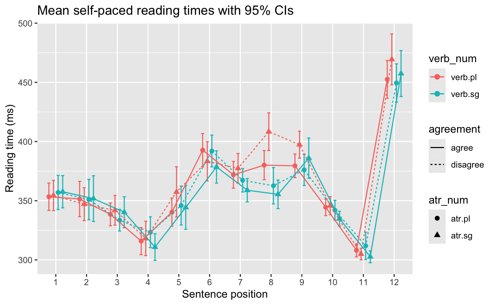

library(tidyverse)
library(here)
library(janitor) # a package for tidying dataEDA of Lacina et al. (2023)
This script produces an exploratory data analysis of the L1 English experiment dataset from Chromý et al. (2023).
Set-up
Load required packages.
Load data.
df_chromy <- read_csv(here("data", "chromy_et-al_2023_English_final.csv")) |>
# clean up names
clean_names() |>
# replace r_t with rt_
rename_at(vars(starts_with("r_t")), ~ str_replace(., "r_t", "rt_"))Explore dataset
Check out variables.
glimpse(df_chromy)Rows: 57,024
Columns: 21
$ participant <chr> "participant_001", "participant_001", "participant_001", …
$ item_no <dbl> 51, 51, 51, 51, 51, 51, 51, 51, 51, 51, 51, 51, 100, 100,…
$ item <chr> "item11", "item11", "item11", "item11", "item11", "item11…
$ atr_num <chr> "atr.pl", "atr.pl", "atr.pl", "atr.pl", "atr.pl", "atr.pl…
$ verb_num <chr> "verb.pl", "verb.pl", "verb.pl", "verb.pl", "verb.pl", "v…
$ word_no <dbl> 1, 2, 3, 4, 5, 6, 7, 8, 9, 10, 11, 12, 1, 2, 3, 4, 5, 6, …
$ word <chr> "The", "invoice", "for", "the", "lawyers", "definitely", …
$ read_times <dbl> 385.0, 511.0, 297.3, 334.6, 345.5, 270.5, 337.5, 270.4, 2…
$ answer_times <dbl> 2554, 2554, 2554, 2554, 2554, 2554, 2554, 2554, 2554, 255…
$ sentence <chr> "The invoice for the lawyers definitely were fully paid b…
$ vek <dbl> 19, 19, 19, 19, 19, 19, 19, 19, 19, 19, 19, 19, 19, 19, 1…
$ pohlavi <chr> "nechce", "nechce", "nechce", "nechce", "nechce", "nechce…
$ question <chr> "Did the accuser pay the invoice?", "Did the accuser pay …
$ answer <chr> "No", "No", "No", "No", "No", "No", "No", "No", "No", "No…
$ correct <dbl> 1, 1, 1, 1, 1, 1, 1, 1, 1, 1, 1, 1, 1, 1, 1, 1, 1, 1, 1, …
$ n_char_sent <dbl> 72, 72, 72, 72, 72, 72, 72, 72, 72, 72, 72, 72, 84, 84, 8…
$ n_char_word <dbl> 3, 7, 3, 3, 7, 10, 4, 5, 4, 2, 3, 10, 3, 9, 3, 3, 7, 12, …
$ order <dbl> 60, 61, 62, 63, 64, 65, 66, 67, 68, 69, 70, 71, 127, 128,…
$ rt_inv2 <dbl> -50.96472, -44.23740, -57.99660, -54.66848, -53.79922, -6…
$ log_rt <dbl> 5.953243, 6.236370, 5.694742, 5.812936, 5.844993, 5.60027…
$ rt_inv2resid <dbl> 1.7009043, 6.9133534, -5.3211461, -1.9881128, -2.6337226,…length(unique(df_chromy$participant))[1] 198There were 198 participants.
length(unique(df_chromy$item))[1] 24There were 24 items.
length(unique(df_chromy$item_no))[1] 96There were 96 unique item IDs, so 4 stimuli per item (we know this by the design).
df_chromy |>
distinct(item, participant, .keep_all = T) |>
tabyl(atr_num, verb_num) |>
adorn_totals(where = c("col", "row")) atr_num verb.pl verb.sg Total
atr.pl 1188 1188 2376
atr.sg 1188 1188 2376
Total 2376 2376 4752There were 4752 unique trials (24 items x 198 participants). Evenly distributed across the four conditions.
df_chromy |>
distinct(participant, item, .keep_all = T) |>
count(participant) |>
count(n)# A tibble: 1 × 2
n nn
<int> <int>
1 24 198Each participant saw 24 unique items.
Response time distributions
df_chromy |>
filter(word_no %in% c(8)) |>
summarise(
mean = mean(read_times, na.rm = T),
sd = sd(read_times, na.rm = T),
N = n(),
.by = c(atr_num, verb_num, word_no)
)# A tibble: 4 × 6
atr_num verb_num word_no mean sd N
<chr> <chr> <dbl> <dbl> <dbl> <int>
1 atr.pl verb.pl 8 380. 216. 1188
2 atr.sg verb.sg 8 355. 212. 1188
3 atr.pl verb.sg 8 363. 270. 1188
4 atr.sg verb.pl 8 408. 280. 1188Longer reading times for singular referents with plural verb than plural referent with singular verb (mismatch conditions).
df_chromy |>
# filter(word_no %in% c(6:9)) |>
mutate(agreement = ifelse(str_sub(atr_num,-2) == str_sub(verb_num,-2), "agree", "disagree"),
condition = paste(verb_num, atr_num, sep = "_")) |>
drop_na() |>
summarise(
N = n(),
mean = mean(read_times, na.rm = T),
se = sd(read_times, na.rm = T)/sqrt(length(read_times)),
ci = 1.96*se,
.by = c(agreement, condition, word_no, atr_num, verb_num)
) |>
arrange(verb_num) |>
ggplot() +
aes(x = as_factor(word_no), y = mean, colour = verb_num, shape = atr_num,
group = condition) +
geom_point(position = position_dodge(0.6), size = 2) +
geom_errorbar(aes(ymin = mean - ci, ymax = mean + ci), position = position_dodge(0.6), width = .4) +
# stat_summary(position = position_dodge(0.6)) +
geom_line(aes(linetype = agreement), position = position_dodge(0.6)) +
labs(title = "Mean self-paced reading times with 95% CIs",
y = "Reading time (ms)",
x = "Sentence position")
Sentence region 8: longer RTs for mismatches with singular attributes (i.e., grammaticality). Opposite (but smaller) effect for plural attributes in this region: longer RTs for matching attribute and verb number marking (agreement attraction).
Accuracy distributions
df_chromy |>
distinct(participant, item, .keep_all = T) |>
tabyl(atr_num, verb_num, correct) |>
adorn_totals(where = c("col", "row"))$`0`
atr_num verb.pl verb.sg Total
atr.pl 73 78 151
atr.sg 73 63 136
Total 146 141 287
$`1`
atr_num verb.pl verb.sg Total
atr.pl 1115 1110 2225
atr.sg 1115 1125 2240
Total 2230 2235 44654465 correct responses overall, 287 incorrect.
Session Info
sessionInfo()R version 4.4.1 (2024-06-14)
Platform: aarch64-apple-darwin20
Running under: macOS Sonoma 14.6
Matrix products: default
BLAS: /Library/Frameworks/R.framework/Versions/4.4-arm64/Resources/lib/libRblas.0.dylib
LAPACK: /Library/Frameworks/R.framework/Versions/4.4-arm64/Resources/lib/libRlapack.dylib; LAPACK version 3.12.0
locale:
[1] en_US.UTF-8/en_US.UTF-8/en_US.UTF-8/C/en_US.UTF-8/en_US.UTF-8
time zone: Europe/Berlin
tzcode source: internal
attached base packages:
[1] stats graphics grDevices utils datasets methods base
other attached packages:
[1] janitor_2.2.0 here_1.0.1 lubridate_1.9.3 forcats_1.0.0
[5] stringr_1.5.1 dplyr_1.1.4 purrr_1.0.2 readr_2.1.5
[9] tidyr_1.3.1 tibble_3.2.1 ggplot2_3.5.1 tidyverse_2.0.0
loaded via a namespace (and not attached):
[1] utf8_1.2.4 generics_0.1.3 stringi_1.8.4 hms_1.1.3
[5] digest_0.6.35 magrittr_2.0.3 evaluate_0.24.0 grid_4.4.1
[9] timechange_0.3.0 fastmap_1.2.0 rprojroot_2.0.4 jsonlite_1.8.8
[13] fansi_1.0.6 scales_1.3.0 cli_3.6.2 rlang_1.1.4
[17] crayon_1.5.2 bit64_4.0.5 munsell_0.5.1 withr_3.0.0
[21] yaml_2.3.8 tools_4.4.1 parallel_4.4.1 tzdb_0.4.0
[25] colorspace_2.1-0 vctrs_0.6.5 R6_2.5.1 lifecycle_1.0.4
[29] snakecase_0.11.1 htmlwidgets_1.6.4 bit_4.0.5 vroom_1.6.5
[33] pkgconfig_2.0.3 pillar_1.9.0 gtable_0.3.5 glue_1.7.0
[37] xfun_0.45 tidyselect_1.2.1 rstudioapi_0.16.0 knitr_1.47
[41] farver_2.1.1 htmltools_0.5.8.1 labeling_0.4.3 rmarkdown_2.27
[45] compiler_4.4.1